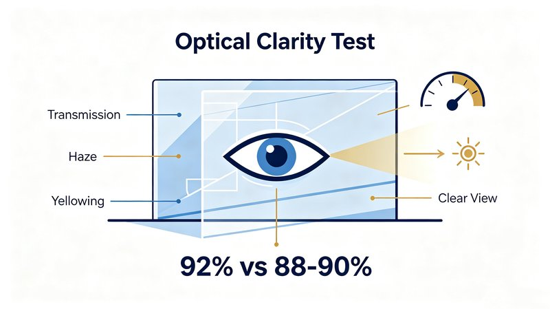
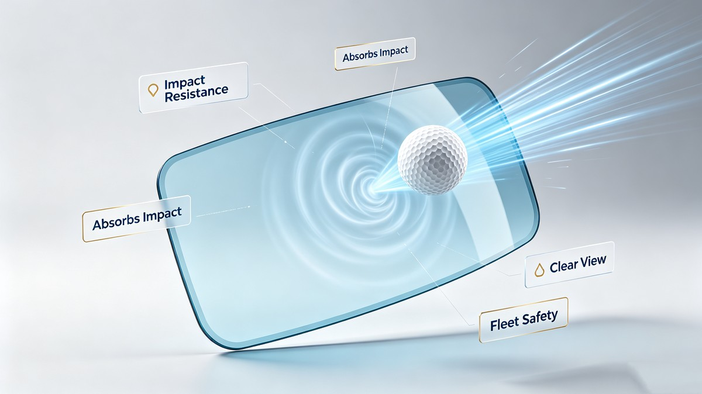
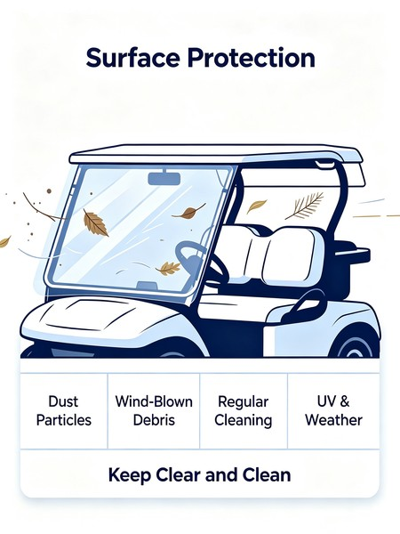
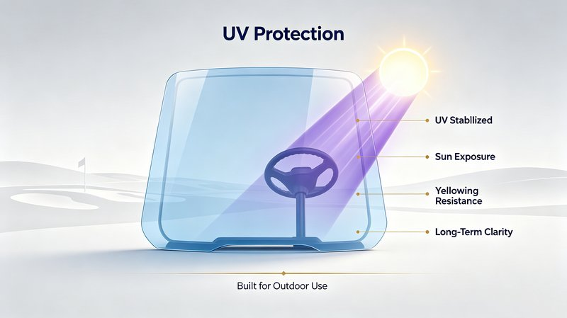

When it comes to replacing or upgrading your golf cart windshield, one question comes up more than any other: acrylic or polycarbonate (PC)? Both are popular plastic alternatives to glass, but they perform very differently across real-world conditions. Choosing the wrong material can mean cracked windshields, poor visibility, or money wasted on features you don't actually need.
In this guide, we break down the two most common golf cart windshield materials across 5 critical dimensions so you can pick the right one for your course, community, or fleet.
1. Optical Clarity —How Well Can You See Through It?
Optical clarity is the #1 job of any windshield. If you can't see clearly through it, nothing else matters.
Acrylic (PMMA) takes the win here. With a light transmission rate of around 92%, acrylic offers glass-like clarity that stays consistent over time. It also has lower haze and less distortion at the edges, which is why most golf course operators and residential owners prefer it for everyday driving.
Polycarbonate comes in at roughly 88–90% transmission —still very good, but slightly lower. More importantly, lower-grade PC can develop a slight yellow tint after years of sun exposure if it lacks proper UV stabilization.

Verdict:
If crystal-clear visibility is your top priority, acrylic is the better choice.
2. Impact Resistance —Can It Take a Hit?
This is where the two materials diverge most dramatically.

Polycarbonate is the undisputed champion of impact resistance. It's roughly 250 times stronger than glass and about 25 times stronger than standard acrylic. A stray golf ball, a low-hanging tree branch, or a rock kicked up by a tire —polycarbonate will absorb the impact without shattering. That's why it's the go-to for off-road use, utility vehicles, and street-legal LSV (Low-Speed Vehicle) builds.
Standard acrylic is rigid and clear, but it will crack or chip under heavy impact. It's fine for normal golf course use where hazards are minimal, but not ideal for rough terrain or high-traffic fleet environments.
Note: There's a middle ground —impact-modified acrylic —which offers better toughness than standard acrylic while retaining most of its clarity. It's a popular upgrade option.
- Polycarbonate: 25× stronger than glass —ideal for street-legal LSV, off-road, and heavy-duty fleet use
- Impact-Modified Acrylic: A balanced middle ground —better toughness than standard acrylic without the full cost of polycarbonate
- Standard Acrylic: Sufficient for casual golf course use where impact risks are minimal
Verdict:
For street use, rough terrain, or heavy-duty fleets —polycarbonate. For casual course use —acrylic is sufficient.
Polycarbonate is roughly 25 times stronger than standard acrylic —it will absorb impact without shattering. If your cart sees rough terrain or public roads, it's worth every penny.
3. Scratch Resistance —Will It Stay Looking New?

Windshields live outdoors. Dust, sand, tree sap, and improper cleaning all cause scratches.
Acrylic is naturally more scratch-resistant than uncoated polycarbonate. Its harder surface means everyday wear and tear —wiping off dust with a cloth, normal weather exposure —leaves fewer marks. A well-maintained acrylic windshield can look brand new for years.
Polycarbonate is soft and scratches easily on its own. Quality PC windshields solve this with a hard coat layer applied to both sides. Hard-coated PC matches or even exceeds acrylic's scratch resistance, but it adds to the cost. If you're considering polycarbonate, always confirm it has a hard coat —otherwise you'll be dealing with a hazy, scratched-up panel within a season.
Verdict:
Standard acrylic beats uncoated PC for scratch resistance. Hard-coated PC is comparable but costs more.
4. UV Protection & Weathering —How Does It Hold Up in the Sun?
Golf carts live outside. UV damage isn't just about the windshield itself —it's about protecting the driver and the cart's interior.
UV-stabilized acrylic is excellent for outdoor use. Premium acrylic sheets are formulated with UV inhibitors that resist yellowing and brittleness from sun exposure. For most golf course climates, a quality acrylic windshield will last 5— years before showing any significant aging.
Polycarbonate also requires UV stabilization. Without it, PC will yellow and become brittle much faster. Top-tier PC windshields include UV protection built into the hard coat, making them highly weather-resistant. Tinted versions of both materials add another layer of sun protection, reducing glare and blocking more UV radiation —a popular upgrade in sunny regions.

Verdict:
Both perform well when properly formulated. Always look for "UV-stabilized" in the product specs, regardless of material.
5. Cost & Overall Value —What's the Smarter Buy?
Budget matters, especially if you're outfitting an entire fleet.
Acrylic is the more affordable option upfront. For typical golf course use where impact risks are low, acrylic delivers 90% of the performance at 60—0% of the cost of premium polycarbonate. It's the best value for most residential and standard course applications.
Polycarbonate costs significantly more —often 40—0% more than a comparable acrylic windshield. But if you need the impact resistance for street driving, off-road use, or high-traffic fleet operations, the extra cost is justified by longer service life and fewer replacements.
Verdict:
Acrylic wins on value for standard use. Polycarbonate is a justified investment for heavy-duty or street-legal applications.
Quick Comparison Summary
Final Recommendation
Choose Acrylic If
- You use your cart primarily on the golf course or in a residential community
- You want the clearest view possible
- You're looking for the best overall value
This is the right choice for roughly 70% of golf cart owners.
Choose Polycarbonate If
- You drive on public roads (LSV / street-legal builds)
- You use your cart off-road or on rough terrain
- You manage a commercial fleet where durability trumps all
Consider impact-modified acrylic if you want something in between —better toughness than standard acrylic without the full cost of polycarbonate.